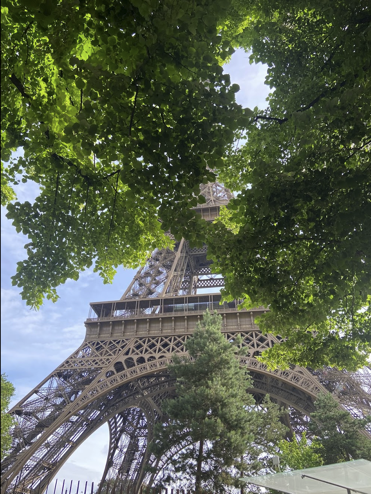
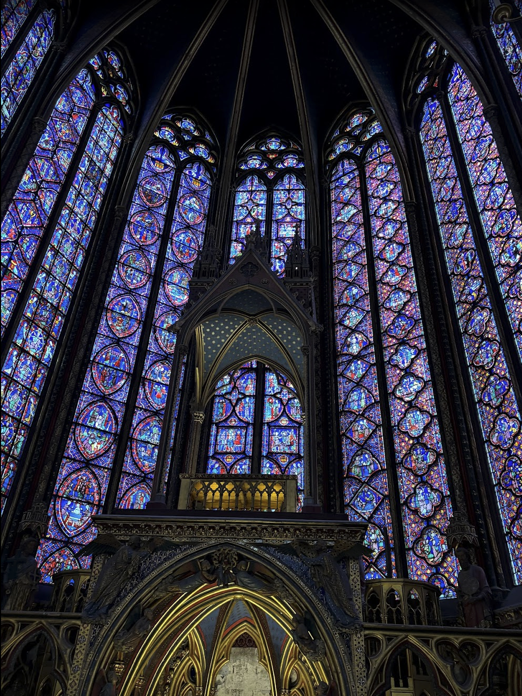
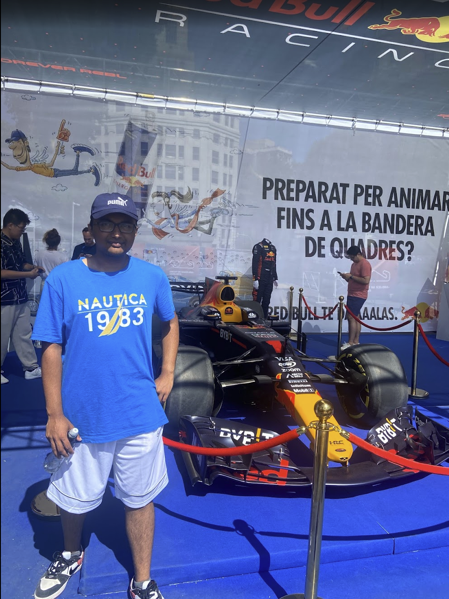
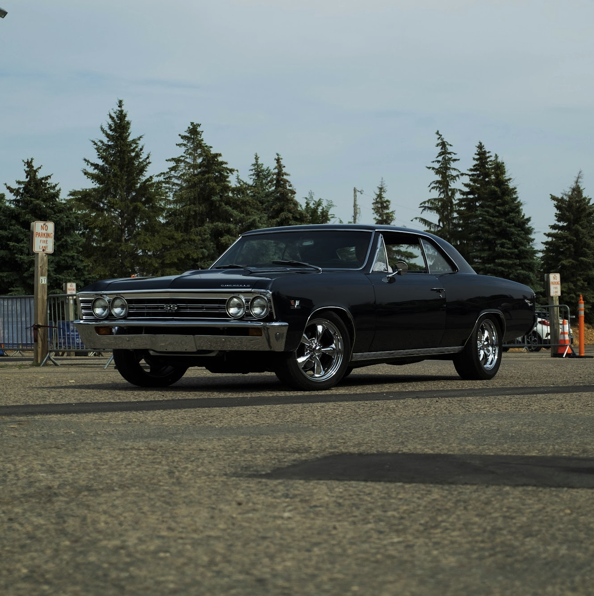

本人について
Hi there, I’m Sai Tanuj Karavadi.
Description / About Me
UW-Madison CS + Data Science. Internships at Western Digital and Spark ERP Consulting. I build under my online handle CyanCheetah; this site keeps color quiet so the work reads first.
Hobbies
Huge cinephile and TV fan: Akira Kurosawa (High and Low tops his filmography for me), Lord of the Rings, Dark Knight, and my favorite film ever, Your Name (君の名は。).
Badminton Club at UW-Madison when I need to move after too much screen time.
Education
University of Wisconsin-Madison, working toward degrees in Computer Science and Data Science. Coursework includes Computer Architecture, Advanced Machine Learning, Algorithms, and related systems and stats. Expecting to graduate December 2026.
Experience
Western Digital, software engineering internship: shipping code inside a large tech org, reviews, and the pace of a real product stack.
Spark ERP Consulting: client-facing work and shipping alongside a small team—details on the résumé.
Summer 2026: I’m scheduled to return to Western Digital as a Software Engineering Intern, starting May 2026. End date is still open, including possible part-time work after the summer. That detail is not on the PDF résumé yet.
写真



